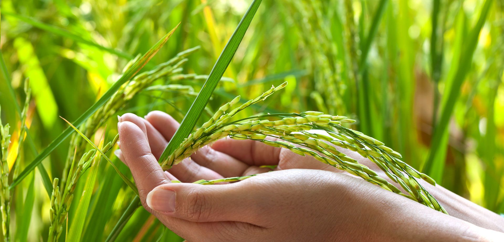
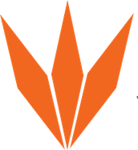
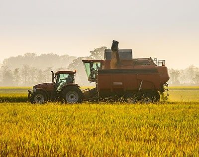
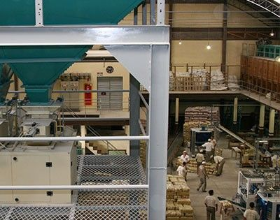
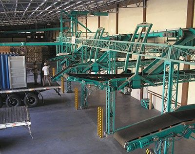
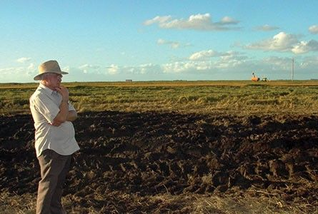
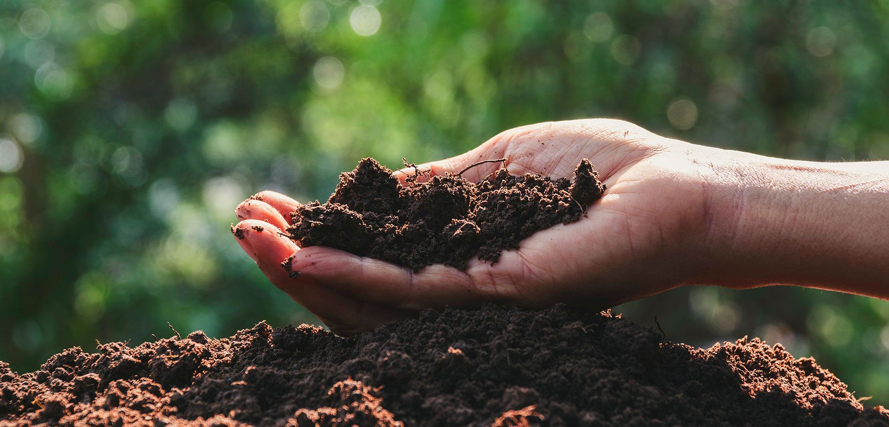

PTENES

O maior exportador de arroz parboilizado do Brasil. Do campo à sua mesa, cada grão recebe atenção total.

Cuidado em cada etapaTemos controle sobre toda a cadeia de produção: lavoura, beneficiamento, empacotamento e distribuição, seguindo os mais altos padrões de qualidade, para que o arroz que chega até você seja sempre seguro e saboroso.

O arroz nasce no sul do Brasil e é colhido no ponto certo.

Parboilização e seleção dos grãos com certificação HACCP.
Embalagens que preservam sabor, textura e nutrientes.

Logística para todo o país, em especial Norte e Nordeste, e para o mundo.
Além do Emoções, líder de vendas no Nordeste brasileiro, trabalhamos com outras marcas nacionais e com produtos exclusivos para exportação.
A marca mais conhecida da Nelson Wendt: branco, parboilizado, integral, arbório e em saquinhos.
→


O sabor que toda família adora. 1 kg e 5 kg.
→

Para quem aprecia um prato bonito e saboroso.
→
Opções para toda a família, inclusive para os pets. Feito com fragmentos do melhor arroz.

Nelson Wendt, aos 21 anos, e o pai Alfredo iniciam a produção num pequeno engenho em Pelotas.
Nasce a marca Emoções, que conquista o Nordeste.
Começa a exportação do parboilizado para as Américas, África e Europa.
Conquistamos o selo HACCP de segurança de alimentos.
Nº 1 entre os exportadores de arroz parboilizado (Abiarroz).

“Seguimos com a mesma certeza de produzir um alimento com dedicação e cuidado de verdade.”Nelson Wendt Alimentos

Seguimos padrões rigorosos para garantir qualidade com o menor impacto possível no meio ambiente.
Que tal conhecer a nossa produção pessoalmente? Fale com a gente e agende uma visita.
Fale conosco